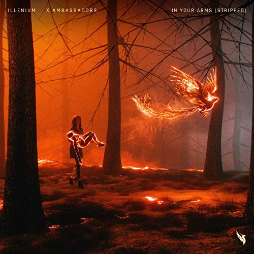

Una canción sobre el sentimiento que uno tiene cuando consigue a su alma gemela,sus comparaciones son bellas.
Lyrics
Never seen Mona Lisa up close
But I've seen perfection under your clothes
Yeah, we fell in love and we built a home
Though we may never see the streets of Rome
And I hope it's okay
'Cause the unknown is on its way
If I die in your arms
It's right where I'm supposed to be
You know I'm not afraid
As long as you're next to me
So tell me, will you hold me
When the curtains close
If I died in your arms
It's right where I'm supposed to be
Yeah, we may never sleep under Northern Lights
But I've seen the stars flicker in your eyes
And I hope it's okay (it's okay)
'Cause the unknown is on its way
If I died in your arms
It's right where I'm supposed to be
You know I'm not afraid
As long as you're next to me
So tell me, will you hold me
When the curtains close
If I died in your arms
It's right where I'm supposed to be
(It's okay)
(It's okay)
If I died in your arms
It's right where I'm supposed to be
(It's okay)
(It's okay)
Lay me down in the ground by my hometown, girl
We, we never leave
But it feels like we've seen the whole world
A thousand cheers when the tears on your parents' roof
Forget my fears every time that I'm under you
All along, all I needed was you
So I swear, I'm not scared when it's over
If I died in your arms
It's right where I'm supposed to be
You know I'm not afraid
As long as you're next to me (so tell me
)
So tell me, will you hold me
When the curtains close
If I died in your arms
It's right where I'm supposed to be (if I died)